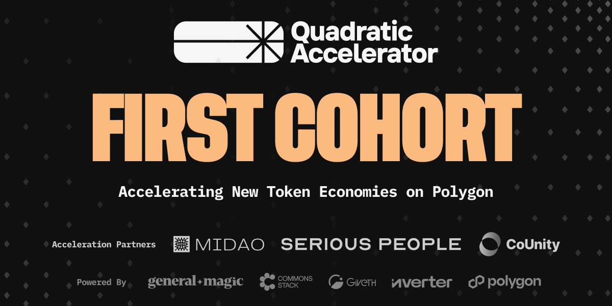

Quadratic Accelerator Announces First Cohort
Originally published at https://paragraph.com/@qacc/quadratic-accelerator-announces-first-cohort

Quadratic Accelerator Announces First Cohort of Startups and Strategic Partnerships
Eight Innovative Projects Across Diverse Web3 Sectors Selected to Pioneer Quadratic Acceleration Exclusively on Polygon zkEVM.
October 2, 2024 — Quadratic Accelerator is a new kind of web3 accelerator enabling community-first, fair launches for web3 projects. The Accelerator uses the q/acc protocol, which combines the power of Quadratic Funding with the advantages of Augmented Bonding Curves to bootstrap and scale token economies with community at their center. This protocol drives long-term value and alignment across protocols, projects, and communities. In addition to a clear tokenization strategy, projects benefit from grants that scale their token economies.
Quadratic Accelerator has deployed the q/acc protocol on Polygon zkEVM. This protocol combines the scalability of Layer 2 with the security of Ethereum’s Layer 1, enabling this cohort to benefit from reduced transaction costs, faster finality, and privacy-preserving zero-knowledge proofs.
We are proud to present the eight projects accepted into the first cohort of the q/acc program. Selected from hundreds of applications, these projects push the boundaries across web3 categories as diverse as DeFi protocols, AI, governance, gaming, physical payment solutions, NFTs, and music and entertainment.

Meet the First Cohort of Quadratic Accelerator:
-
Akarun: Akarun is a mobile game where players race custom runners tied to live market assets. The fastest runner linked to the top-performing asset wins.
-
Ancient Beast: Ancient Beast is an open-source, match-based (1v1 or 2v2) eSports strategy game played against other people or AI. It has no chance-based elements and is designed to be easy to learn, fun to play, and hard to master.
-
Citizen Wallet: Citizen Wallet empowers communities and events with Web3 tools to easily launch, use, and manage community tokens via a mobile app and NFC wallets.
-
DJookyX: DjookyX is a decentralized exchange focused on listing asset-backed music tokens that represent shares in song royalty rights. These tokens enable passive income from music monetization.
-
Prismo Technology: Prismo Technology is a layer-2 hybrid public-private blockchain platform designed to enable secure and scalable solutions for enterprises and government organizations, facilitating the transition of traditional technologies to blockchain.
-
The Grand Timeline: The Grand Timeline is a historical research and data visualization project about the entire history of blockchains and Web3. It will be the first interactive and collectible story of its kind.
-
x23.ai: x23 is automating the future of decentralized organizations by integrating AI tools to streamline the operation and governance of DAOs, making them more efficient and autonomous.
-
Xade Finance: Xade Finance is building the AI-powered Robinhood of DeFi. It is a decentralized platform driven by AI insights and tools that offers a seamless experience for trading and managing digital assets.
These eight projects are positioned to tackle key challenges and unlock new opportunities in web3. They were selected based on their founders' leadership, proven track records, talented teams, and the distinctive solutions they are developing.
Strategic Partners Powering the Accelerator
Quadratic Accelerator is excited to announce our acceleration partners, who bring deep expertise and extensive resources to the table. Our acceleration partners include:
-
Serious People – Serious People is an advisory firm dedicated to igniting positive change by helping projects manage emissions and navigate the complexities of our industry. Their mission is to build a more sustainable web3, leveraging their vast experience and data-driven analytics.
-
CoUnity – CoUnity is a collective of Community strategists focused on building vibrant and engaged onchain communities. They empower brands with effective analytics, systems, structures & tools to help drive engagement, retention & growth.
-
MIDAO—MIDAO provides legal entity formation services for DAOs and crypto organizations in the Marshall Islands (RMI), offering compliant, cost-effective, and internationally recognized structures. Their offering, the RMI DAO LLC, enables crypto organizations to establish blockchain-native legal entities due to the Marshall Islands crypto-focused legislation, regulation, and administrative support.
Serious People, CoUnity, and MIDAO each bring unique expertise to the Accelerator. Together, our partners offer tailored support that accelerates development, strengthens community engagement, and positions our cohort for sustainable market success.
About Quadratic Accelerator
The Quadratic Accelerator is incubated at Giveth and has built the q/acc protocol on Polygon. It is powered by the teams and talent behind Commons Stack, Inverter Network, and General Magic.
For more information on Quadratic Accelerator or to stay updated on the progress of our first cohort, visit qacc.giveth.io and follow us on X and Farcaster.
Originally published on Quadratic Accelerator